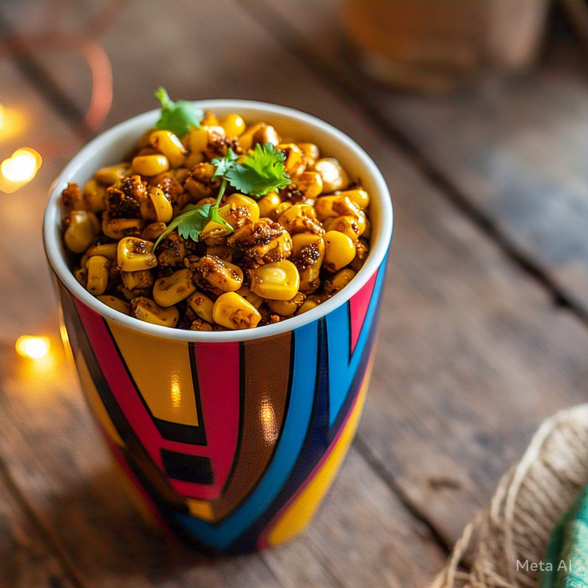
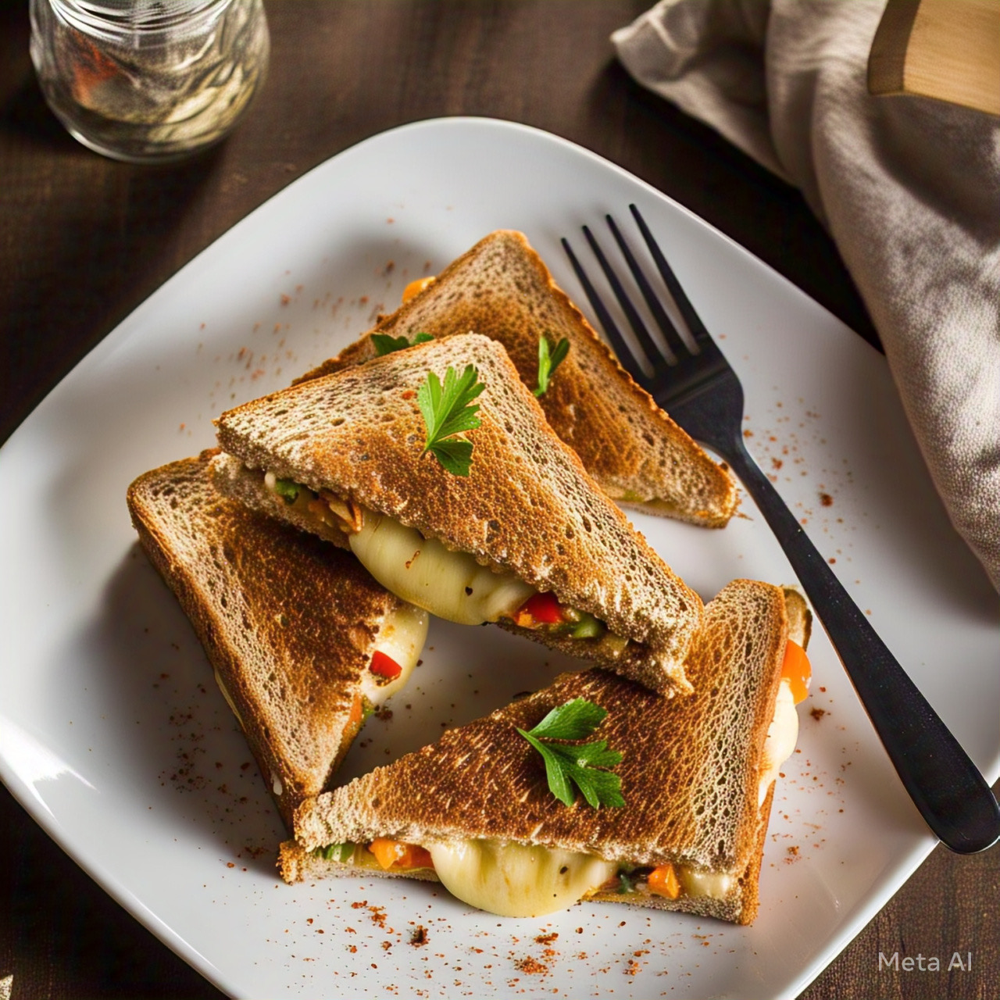
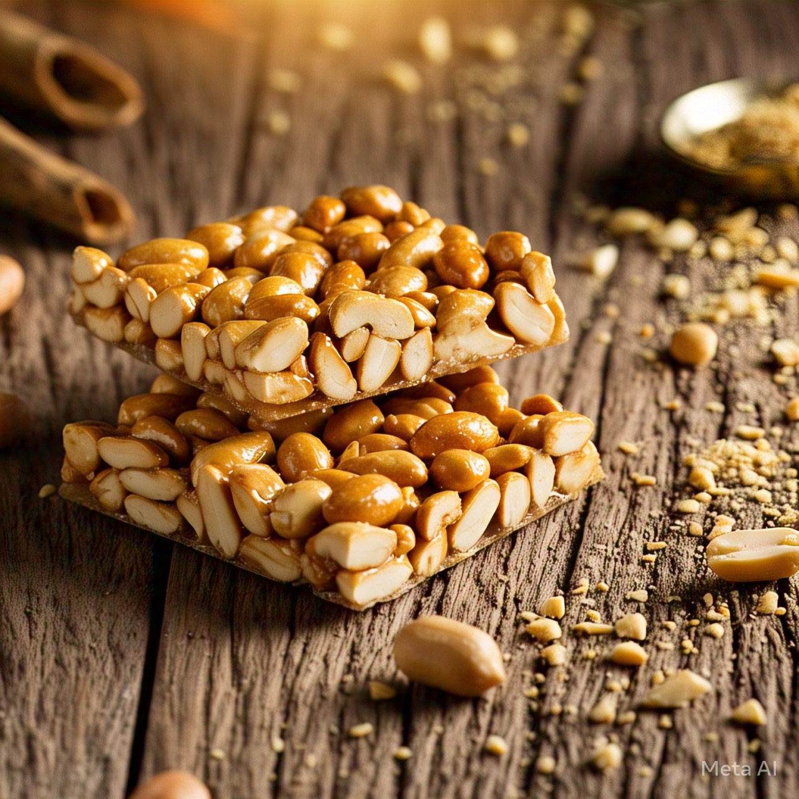

Snack menu list
1. Masala corn

Ingredients
- 1 cup boiled sweet corn
- 1 tsp butter
- 1/2 tsp red chili powder
- 1/2 tsp chaat masala
- A pinch of salt
- Few drops of lemon juice
Preparation
-
Mix all ingredients in a bowl while the corn is warm. Serve hot and spicy!
2. Veg Cheese Sandwich

Ingredients
- Bread slices
- Grated cheese
- Chopped veggies (capsicum, tomato, onion)r
- Butter
- Oregano/chili flakes
Preparation
-
Butter the bread, add veggies and cheese, sprinkle spices. Grill or toast. Serve with ketchup or chutney.
3. Banana Fritters (Pazham Pori - Kerala Style)
Ingredients
- 2 ripe bananas
- 1 cup maida (all-purpose flour)
- 1 tbsp rice flour (for crispiness)
- A pinch of turmeric
- Sugar (optional)
- Water to make batter
Preparation
-
Slice bananas. Make a semi-thick batter. Dip slices and deep fry till golden.
4. Peanut Chikki (Sweet & Crunchy)

Ingredients
- 1 cup roasted peanuts
- 3/4 cup jaggery
- 1 tsp ghee
Preparation
-
Melt jaggery in a pan with a little water. Once it reaches a sticky consistency, add peanuts. Mix, spread on greased surface, and cut into squares.
5. Instant Bread Pizza
Ingredients
- Instant Bread Pizza
- Pizza sauce or ketchup
- Chopped veggies (onion, capsicum, tomato)
- Grated cheese
- Oregano/chili flakes
Preparation
-
Spread sauce on bread, add veggies and cheese. Toast in pan or oven until cheese melts.
6. Classic Vegetable Salad
Ingredients
- 1 cucumber (chopped)
- 1 tomato (chopped)
- 1 onion (sliced)
- 1 grated carrot
- Salt & pepper
- Lemon juice
- Coriander leaves
Preparation
-
Mix all veggies in a bowl. Add salt, pepper, lemon juice, and mix well. Garnish with coriander.
7. Sprouts Salad (Protein-packed)
Ingredients
- 1 cup moong sprouts (boiled slightly)
- 1 small onion (chopped)
- 1 tomato (chopped)
- 1 green chili (optional)
- Salt, lemon juice
- Chaat masala (optional)
Preparation
-
Toss everything together and serve fresh. You can add grated carrot or pomegranate too.
8. Chickpea (Channa) Salad
Ingredients
- 1 cup boiled chickpeas
- 1/2 onion, tomato, and cucumber (chopped)
- Salt, chili powder
- Lemon juice
- Mint/coriander leaves
Preparation
-
Combine all ingredients in a bowl. Chill for 10 minutes before serving.
9. Fruit & Nut Salad (Sweet & Crunchy)
Ingredients
- Chopped fruits (apple, banana, pomegranate, orange)
- Chopped nuts (almonds, walnuts, cashews)
- Honey (optional)
- pinch of cinnamon
Preparation
-
Toss fruits and nuts. Drizzle honey and a light sprinkle of cinnamon. Serve chilled.
10. Curd Salad (Raita Style)
Ingredients
- 1 cup curd (yogurt)
- 1/2 cucumber (grated)
- 1/2 carrot (grated)
- Salt & cumin powder
- Coriander leaves
Preparation
-
Mix curd with veggies and spices. Garnish and serve as a cooling side dish.